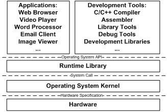

1.3 站得高，望得遠
系統軟體這個概念其實比較模糊，傳統意義上一般將用於管理計算機本身的軟體稱為系統軟體，以區別普通的應用程式。系統軟體可以分成兩塊，一塊是平台性的，比如作業系統核心、驅動程式、執行庫和數以千計的系統工具；另外一塊是用於程式開發的，比如編譯器、組譯器、連結器等開發工具和開發庫。本書將著重介紹系統軟體的一部分，主要是連結器和庫（包括執行庫和開發庫）的相關內容。
計算機系統軟體體係結構採用一種層的結構，有人說過一句名言：
“電腦科學領域的任何問題都可以透過增加一個間接的中間層來解決”遺憾的是，這句經典的名言出處無從考證，據說是有人從圖靈獎的獲得者Butler Lampson的講座上聽來的；也有人說是EDSAC的發明者David Wheeler講的；還有人指出這是CMU計算機係創始人Alan Perlis的名言。
“Any problem in computer science can be solved by another layer of indirection.”
這句話幾乎概括了計算機系統軟體體係結構的設計要點，整個體係結構從上到下都是按照嚴格的層次結構設計的。不僅是計算機系統軟體整個體係是這樣的，體係裡面的每個元件比如作業系統本身，很多應用程式、軟體系統甚至很多硬體結構都是按照這種層次的結構組織和設計的。系統軟體體係結構中，各種軟體的位置如圖1-3所示。

每個層次之間都需要相互通訊，既然需要通訊就必須有一個通訊的協議，我們一般將其稱為介面（Interface），介面的下面那層是介面的提供者，由它定義介面；介面的上面那層是介面的使用者，它使用該介面來實現所需要的功能。在層次體係中，介面是被精心設計過的，盡量保持穩定不變，那麼理論上層次之間只要遵循這個介面，任何一個層都可以被修改或被替換。除了硬體和應用程式，其他都是所謂的中間層，每個中間層都是對它下面的那層的包裝和擴充套件。正是這些中間層的存在，使得應用程式和硬體之間保持相對的獨立，比如硬體和作業系統都日新月異地發展，但是最初為80386晶片和DOS系統設計的軟體在最新的多核處理器和Windows Vista下還是能夠執行的，這方面歸功於硬體和作業系統本身保持了向後相容性，另一方面不得不歸功於這種層次結構的設計方式。最近開始流行的虛擬機器技術更是在硬體和作業系統之間增加了一層虛擬層，使得一個計算機上可以同時執行多個作業系統，這也是層次結構帶來的好處，在盡可能少改變甚至不改變其他層的情況下，新增加一個層次就可以提供前所未有的功能。
我們的軟體體係中，位於最上層的是應用程式，比如我們平時用到的網路瀏覽器、Email客戶端、多媒體播放器、圖片瀏覽器等。從整個層次結構上來看，開發工具與應用程式是屬於同一個層次的，因為它們都使用一個介面，那就是作業系統應用程式程式設計介面（Application Programming Interface）。應用程式介面的提供者是執行庫，什麼樣的執行庫提供什麼樣的API，比如Linux下的Glibc庫提供POSIX的API；Windows的執行庫提供Windows API，最常見的32位Windows提供的API又被稱為Win32。
執行庫使用作業系統提供的系統呼叫介面（System call Interface），系統呼叫介面在實現中往往以軟體中斷（Software Interrupt）的方式提供，比如Linux使用0x80號中斷作為系統呼叫介面，Windows使用0x2E號中斷作為系統呼叫介面（從Windows XP Sp2開始，Windows開始採用一種新的系統呼叫方式）。
作業系統核心層對於硬體層來說是硬體介面的使用者，而硬體是介面的定義者，硬體的介面定義決定了作業系統核心，具體來講就是驅動程式如何操作硬體，如何與硬體進行通訊。這種介面往往被叫做硬體規格（Hardware Specification），硬體的生產廠商負責提供硬體規格，作業系統和驅動程式的開發者透過閱讀硬體規格文件所規定的各種硬體程式設計介面標準來編寫作業系統和驅動程式。